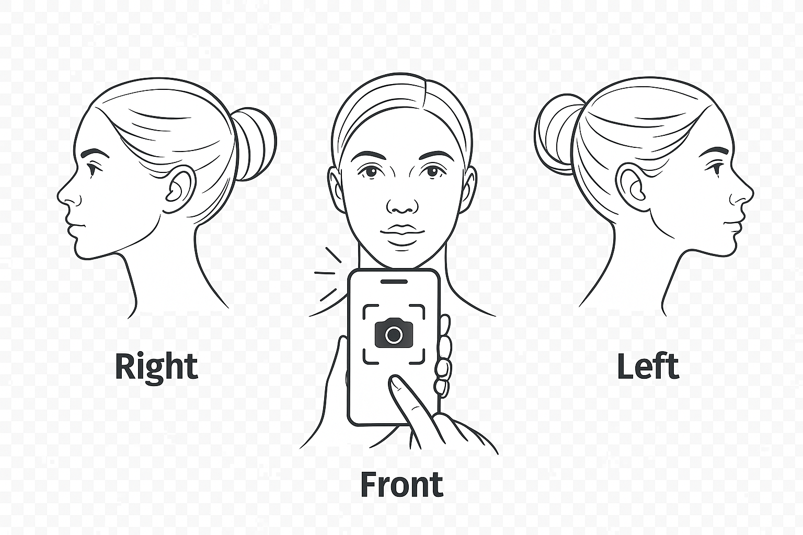
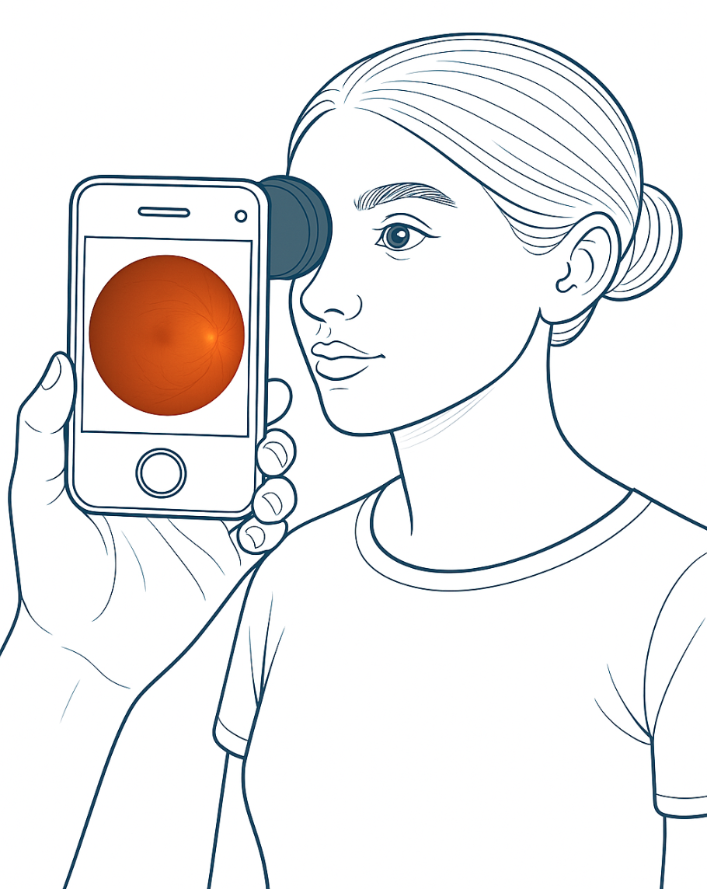
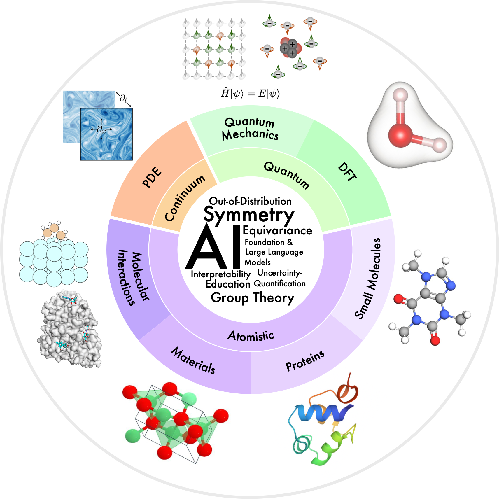
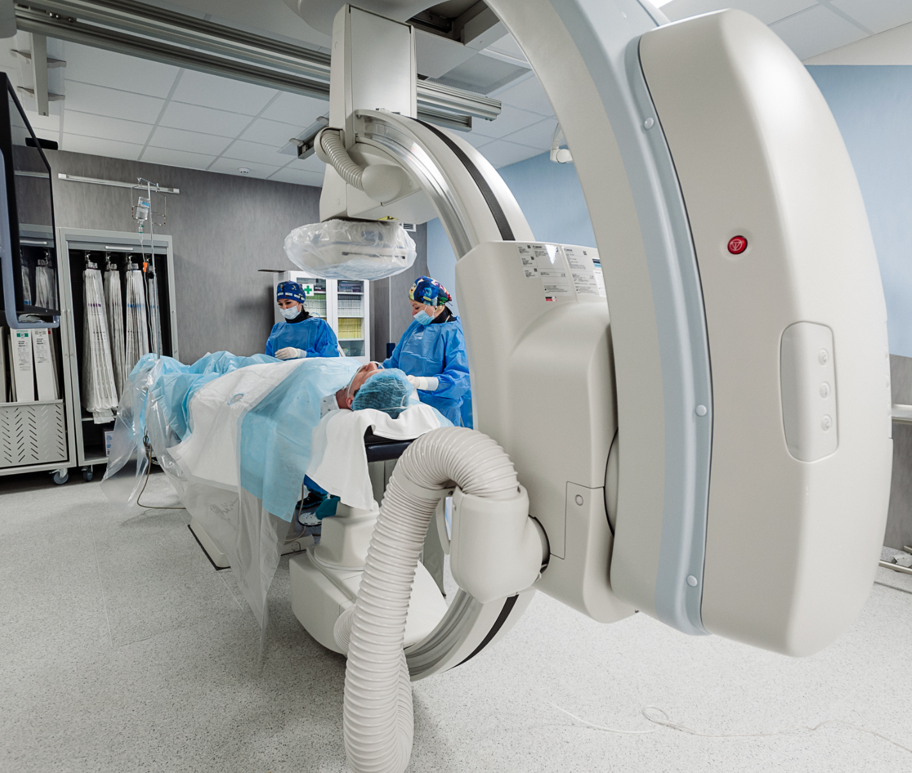

В назделе Карьера мы публикуем доступные вакансии по направлениям исследований.
Наши проекты

Диагностика ИБС по фотографии лица
Помимо распространённых прогностических моделей, построенных на традиционных клинических факторах риска [1–2], некоторые внешние черты лица также оказались связаны с повышенной вероятностью развития ИБС, что открывает новые возможности для скрининга данной патологии [3].
Например, такие признаки, как облысение, седина, морщины на лице, складка мочки уха, ксантелазмы и дуга роговицы были ассоциированы с более высоким риском ИБС и ухудшением состояния сердечно-сосудистой системы【4–6】.
Ряд исследований также продемонстрировал, что подобные особенности внешности могут быть полезны для выявления ИБС и даже повышать точность традиционных моделей прогноза.
Недавно подобное исследования были проведены в китае и показали впечатлющие результаты. [7]
Наша цель: Разработка алгоритма для выявления риска ишемической болезни сердца на основании анализа фото лица пациента.
Особенности: клиническое тестирование, открытые публикации, масштабируемая архитектура.
Особенности: клиническое тестирование, открытые публикации, масштабируемая архитектура.
Литература:
- [1].Peter WF, Ralph BD, Daniel L, Belanger AM, Silbershatz H, Kannel WB. Prediction of coronary heart disease using risk factor categories. Circulation, 1998.
- [2].Almeida J, Fonseca P, Dias T, Ladeiras-Lopes R, Bettencourt N, Ribeiro J, Gama V. Comparison of coronary artery disease consortium 1 and 2 scores and Duke clinical score to predict obstructive coronary disease by invasive coronary angiography. Clin Cardiol , 2016.
- [3].Christoffersen M, Tybjærg-Hansen A. Visible aging signs as risk markers for ischemic heart disease: epidemiology, pathogenesis and clinical implications. Ageing Res Rev, 2016.
- [4].Christoffersen M, Frikke-Schmidt R, Schnohr P, Jensen GB, Nordestgaard BG, Tybjærg-Hansen A. Visible age-related signs and risk of ischemic heart disease in the general population a prospective cohort study. Circulation , 2014.
- [5].Schnohr P, Lange P, Nyboe J, Appleyard M, Jensen G. Gray hair, baldness, and wrinkles in relation to myocardial infarction: the Copenhagen city heart study.Am Heart J , 1995.
- [6].Ang M, Wong W, Park J, Wu R, Lavanya R, Zheng Y, Cajucom-Uy H, Tai ES, Wong TY. Corneal arcus is a sign of cardiovascular disease, even in low-risk persons. Am J Ophthalmol , 2011.
- [7].Wang Y, Mao LH, Jia EZ, Li ZY, Ding XQ, Ge PC, Liu Z, Zhu TB, Wang LS, Li CJ, Ma WZ, Yang ZJ. Relationship between diagonal earlobe creases and coronary artery disease as determined via angiography. BMJ Open, 2016.

ИИ для анализа глазного дна
Изучение состояния сосудов сетчатки глаза давно используется врачами для оценки риска сердечно-сосудистых заболеваний (ССЗ), поскольку изменения в сосудах сетчатки, например, сужение артериол, отражают патологии в других сосудистых областях организма, включая мозг и сердце[1-2].
С развитием цифровой офтальмологии и автоматизированных методов анализа стало возможным более точно и объективно измерять калибр сосудов, что позволило выявить их тесную связь с традиционными факторами риска ССЗ и даже предсказывать будущие неблагоприятные события, такие как инфаркт или инсульт[1-2].
Использование глубокого обучения для анализа фотографий глазного дна уже доказало свою эффективность в выявлении ряда заболеваний [3][4].
Такой подход обеспечивает быстрый, недорогой и воспроизводимый способ скрининга, что делает его весьма перспективным для массовых исследований и клинического применения.
Литература:
- [1].Wong, T. Y. et al. Retinal arteriolar narrowing and risk of coronary heart disease in men and women. The atherosclerosis risk in communities study. JAMA, 2002.
- [2].Wang, S. B. et al. A spectrum of retinal vasculature measures and coronary artery disease. Atherosclerosis, 2018.
- [3].Liew, G., Wang, J. J., Mitchell, P. & Wong, T. Y. Retinal vascular imaging: a new tool in microvascular disease research. Circ. Cardiovasc. Imaging , 2008.
- [4].Cheung, C. Y., Ikram, M. K., Klein, R. & Wong, T. Y. The clinical implications of recent studies on the structure and function of the retinal microvasculature in diabetes. Diabetologia, 2015.
Цифровой ассистент поддержкий для врача
Эффективный постоперационный контроль состояния пациентов — важнейший этап современного медицинского наблюдения.
Своевременное выявление осложнений или негативной динамики позволяет быстро скорректировать лечение, предупредить тяжёлые последствия и снизить риск повторной госпитализации.
Однако традиционный подход с регулярными телефонными обзвонами требует значительных временных ресурсов от врачей и среднего медицинского персонала, особенно при большом количестве пациентов.
Внедрение интеллектуального ассистента, способного самостоятельно обзванивать пациентов после операции, собирать ключевые параметры самочувствия и оперативно советовать обратиться за медицинской помощью при выявлении тревожных признаков, существенно облегчает работу врача. [1-2]
Такой ИИ-ассистент может работать по чёткому протоколу, не забывает задать важные вопросы и способен выявить даже неочевидные риски с учётом истории болезни.
Это позволяет врачу сосредоточиться на более сложных и критических случаях, повысить качество и персонализацию постоперационного контроля, а также экономит значительное количество времени, снижая нагрузку на медицинский персонал. [3]
Литература:
- [1].Arun Babu и Sekhar Babu Boddu. «BERT-Based Medical Chatbot: Enhancing Healthcare Communication through Natural Language Understanding». Exploratory Research in Clinical and Social Pharmacy, 2024.
- [2].Huang MY, Weng CS, Kuo HL, Su YC. Using a chatbot to reduce emergency department visits and unscheduled hospitalizations among patients with gynecologic malignancies during chemotherapy: A retrospective cohort study. Heliyon, 2023.
- [3].Geoghegan L, Scarborough A, Wormald JCR, et al. Automated conversational agents for post-intervention follow-up: a systematic review. BJS Open, 2021.
Проекты в ВШЭ

Физика материалов и молекул в ВШЭ
Большие языковые модели показали впечатляющие способности в решении большого числа задач, но всё ещё есть проблемы в их использовании в естественно-научном направлении. [1]
В нашем проекте мы планируем - адаптировать и изучить поведение LLMs, для задач генерации структур на атомарном уровне для решения физико-химических задач.
Одна из больших проблем в области генеративных моделей - это ограниченное количество данных, особенно экспериментальных [2]. Помимо проблемы недостатка данных, выбор метода представления материалов не однозначен и зависит от выбанного подхода.
Выбирая представление в одном виде, теряется часть информации об объекте, мы адаптируем и распространим методы текстового представления на низкоразмерные кристаллические структуры, а для молекулярных структур мы предлагаем использовать мультимодальный подход представления атомарных структур для улучшения качества генерации.
Конечной целью нашей работы является разработка алгоритмов определения состава и геометрического строения кристаллов и молекул с учетом их практически важных макроскопических физических свойств. Работы в этом направлении ведутся [3-5] и было предложено много различных методов генерации, однако у многих есть существенные ограничения.
В случае кристаллов стоит уделить особое внимание оптическим свойствам и низкоразмерным структурам, таким как двумерные материалы. Они в данный момент не полностью изучены, а их число с каждым годом только растет.
Двумерные материалы [6] являются очень перспективными с точки зрения приложений, из-за своих уникальных свойств и размеров, кроме этого низкоразмерные материалы на основе двумерных относительно легко сконструировать экспериментально.
Литература:
- [1].Antunes, L.M., Butler, K.T. and Grau-Crespo, R., Crystal structure generation with autoregressive large language modeling. Nature Communications, 2024.
- [2].Al-Maeeni, A., Lazarev, M., Kazeev, N., Novoselov, K.S. and Ustyuzhanin, A., Review on automated 2D material design. 2D Materials, 2024.
- [3].Luo, X., Wang, Z., Gao, P., Lv, J., Wang, Y., Chen, C. and Ma, Y., Deep learning generative model for crystal structure prediction.npj Computational Materials, 2024.
- [4].Jablonka, K.M., Schwaller, P., Ortega-Guerrero, A. and Smit, B., Leveraging large language models for predictive chemistry.Nature Machine Intelligence, 2024.
- [5].Merchant, A., Batzner, S., Schoenholz, S.S., Aykol, M., Cheon, G. and Cubuk, E.D., Scaling deep learning for materials discovery. Nature, 2023.
- [6].Glavin, N.R., Rao, R., Varshney, V., Bianco, E., Apte, A., Roy, A., Ringe, E. and Ajayan, P.M., 2020. Emerging applications of elemental 2D materials. Advanced Materials, 2020.

Прикладной ML в в ВШЭ
Коронарная болезнь сердца (КБС) остаётся одной из ведущих причин смертности и заболеваемости во всём мире, в том числе в России, где на неё приходится более половины всех случаев сердечно-сосудистых заболеваний.
Несмотря на успехи медицины, эффективная диагностика и лечение КБС остаются приоритетной задачей для здравоохранения.
Современные методы визуализации, такие как коронарография, обеспечивают врачу огромный объём информации для принятия клинических решений, однако растущий поток данных требует значительных ресурсов для обработки и интерпретации.
Кроме того, человеческий фактор может влиять на точность анализа, что приводит к дополнительным рискам и затратам.
Создание автоматизированных инструментов, способных быстро и точно анализировать результаты коронарографии и рассчитывать ключевые параметры кровотока в реальном времени, способно повысить качество диагностики и снизить нагрузку на врачей и систему здравоохранения.
Реализация такого подхода становится возможной благодаря современным технологиям машинного обучения и искусственного интеллекта, которые уже зарекомендовали себя в обработке медицинских изображений. [1]
В проекте предполагается разработка многоэтапной платформы для всесторонней оценки состояния коронарных сосудов, включая сегментацию артерий [2], построение трёхмерных моделей [3-5], моделирование гемодинамики и автоматический расчёт риска ишемических событий на основе полученных данных.
Такой комплексный подход позволит не только повысить точность диагностики КБС, но и оптимизировать затраты на лечение, что делает его весьма актуальным и практически реализуемым направлением для медицины будущего.
Литература:
- [1].Khelimskii, D., Badoyan, A., Krymcov, O., Baranov, A., Manukian, S. and Lazarev, M., AI in interventional cardiology: Innovations and challenges. Heliyon, 2024.
- [2].Iyer, K., Najarian, C.P., Fattah, A.A., Arthurs, C.J., Soroushmehr, S.R., Subban, V., Sankardas, M.A., Nadakuditi, R.R., Nallamothu, B.K. and Figueroa, C.A., AngioNet: a convolutional neural network for vessel segmentation in X-ray angiography. Scientific Reports, 2021.
- [3].Iyer, K., Nallamothu, B.K., Figueroa, C.A. and Nadakuditi, R.R., A multi-stage neural network approach for coronary 3D reconstruction from uncalibrated X-ray angiography images. Scientific Reports, 2023.
- [4].Galassi, F., Alkhalil, M., Lee, R., Martindale, P., Kharbanda, R.K., Channon, K.M., Grau, V. and Choudhury, R.P., 3D reconstruction of coronary arteries from 2D angiographic projections using non-uniform rational basis splines (NURBS) for accurate modelling of coronary stenoses. PloS one, 2018.
- [5].Maas, K.W., Ruijters, D., Vilanova, A. and Pezzotti, N., NeRF-CA: Dynamic Reconstruction of X-ray Coronary Angiography with Extremely Sparse-views. arXiv preprint arXiv:2408.16355. Heliyon, 2024.
Доступны вакансии!